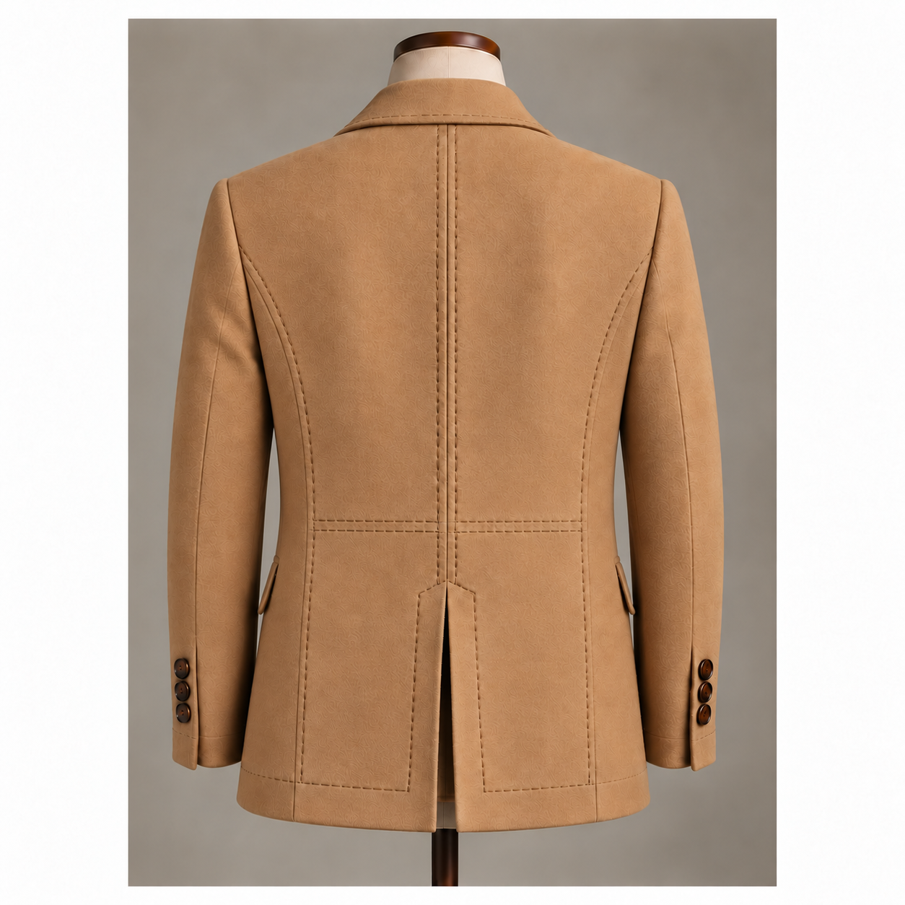

Double-breasted · Midnight navy

EVERY LINE HAS AN INTENTION.OUR STORY
Elegance begins
with who you are.
Maison Christenzen was born from a belief in masculine elegance, individuality and quiet confidence.
A jacket should accompany the man who wears it: reflect his character, strengthen his presence, and feel like an expression of himself. We bring that intention to modern tailoring, made in Peru, with carefully chosen fabrics and hand-finished details.
Read our philosophy
For us, masculinity lives in composure, integrity and respect. It is the calm confidence in the way a man moves through the world and treats others.
We draw on the traditions of tailoring, where every detail has a purpose. Our pieces combine modern construction with thoughtful hand finishing, preserving a sense of character in every garment.
Created for the man who values quality without excess, who knows his own mind, and who never stops being himself.
Maison ChristenzenMADE IN PERU